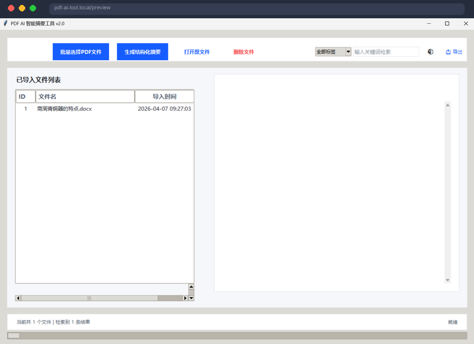
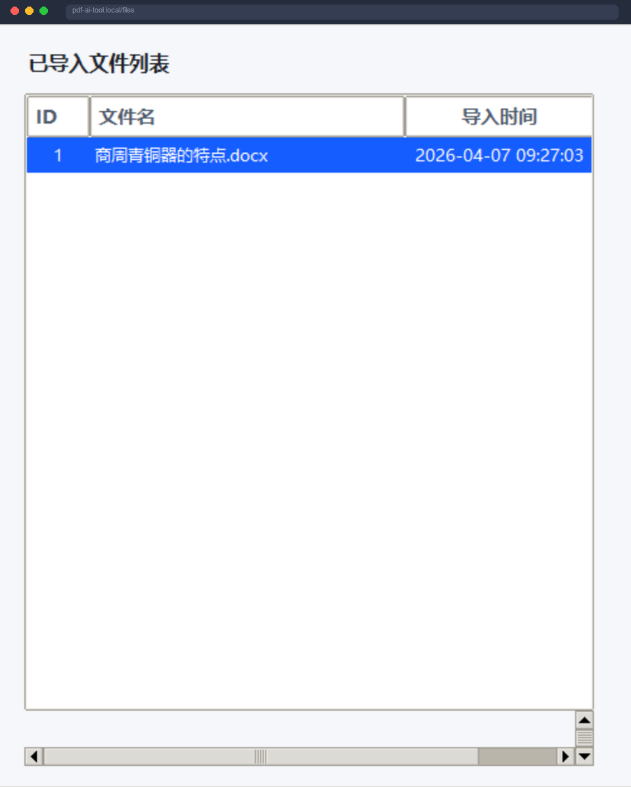
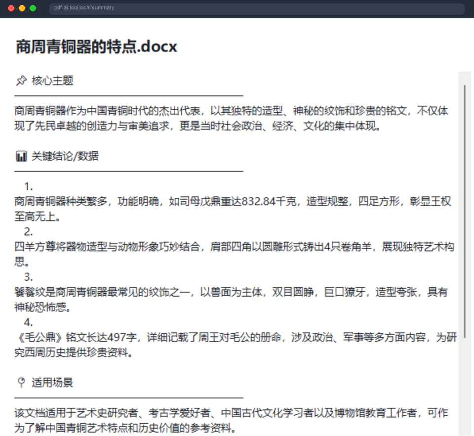
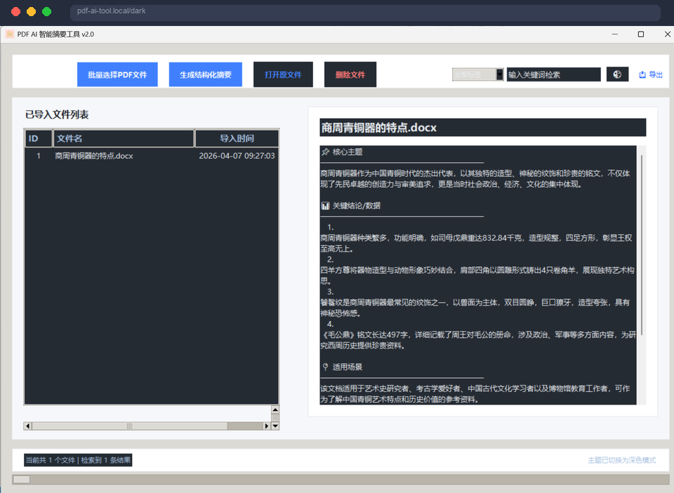
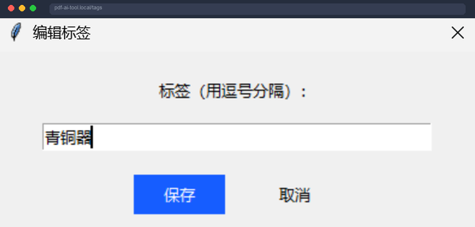

AI 智能摘要
基于 MinMax 大模型，自动分析文档内容，生成结构化摘要，提炼核心主题、关键数据和核心结论。

AI 赋能，让繁重的文档阅读变得轻松高效
基于 MinMax 大模型，自动分析文档内容，生成结构化摘要，提炼核心主题、关键数据和核心结论。
支持 PDF、Word、Excel、TXT 等常见文档格式，批量导入处理，一次选择多个文件。
为文档打标签，支持按标签筛选查找，轻松管理大量文献资料，构建个人知识库。
支持按标题、内容、标签快速检索，输入关键词即刻定位目标文档，不遗漏任何重要信息。
一键导出摘要为 Excel 或 Word 格式，方便整理、分享和归档，适配各种办公场景。
支持暗黑/明亮模式一键切换，适配不同使用环境，保护视力，使用更舒适。
每一步操作都经过精心设计

文件列表与状态管理

结构化摘要展示

暗黑模式界面

标签分类管理
快速解答您的疑问
PDF AI 智能摘要工具完全免费使用。如需批量处理或高级功能，请自行部署或联系开发者。
生成摘要需要连接互联网（调用 MinMax 大模型）。文档导入和本地管理功能可离线使用。
目前支持 PDF、Word（.doc/.docx）、Excel（.xls/.xlsx）和纯文本（.txt）格式。
软件首次运行时会提示配置 API Key。您需要在智谱AI开放平台（open.bigmodel.cn）注册并创建 API Key。
通过 Windows「设置」→「应用」找到「PDF AI 智能摘要工具」，点击卸载即可完全移除。
提升阅读效率，让信息管理更轻松